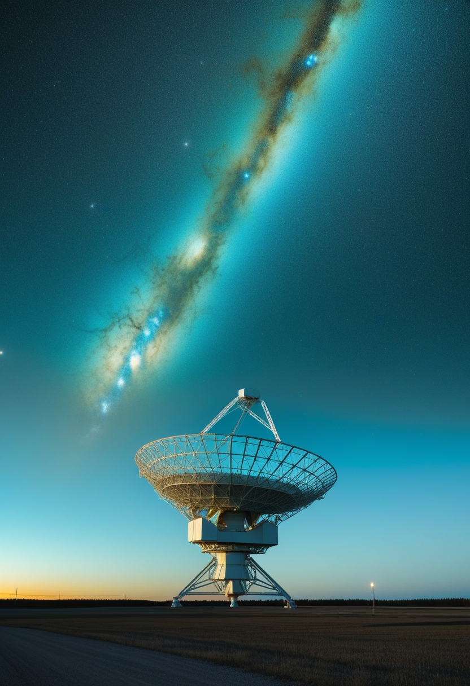
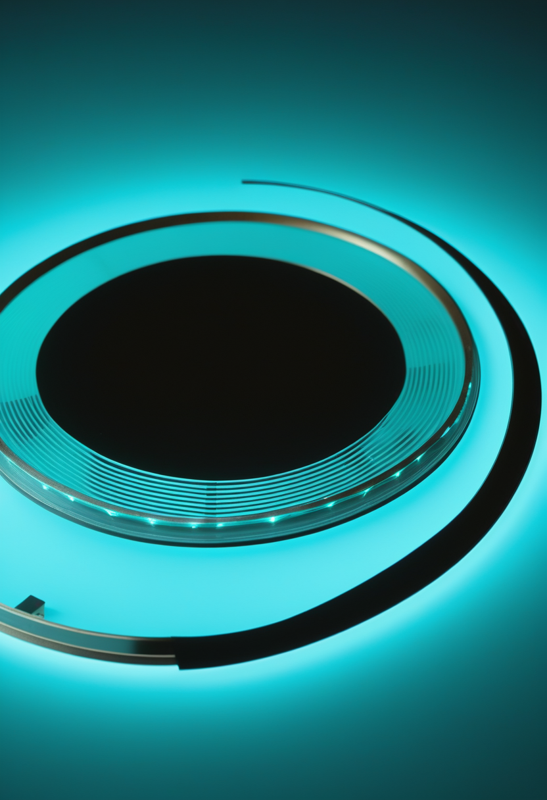
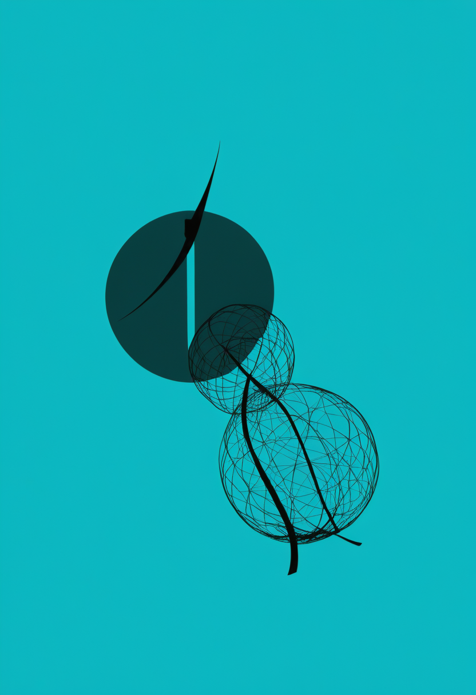
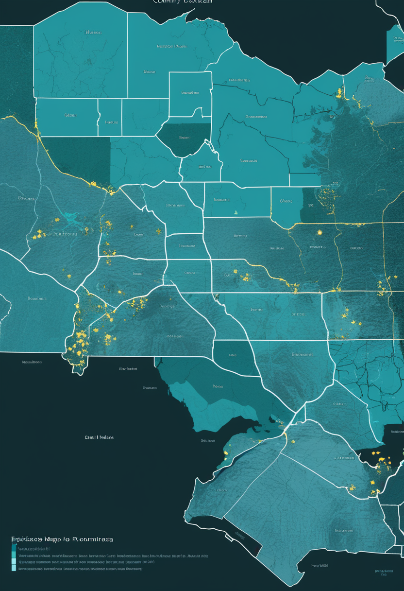
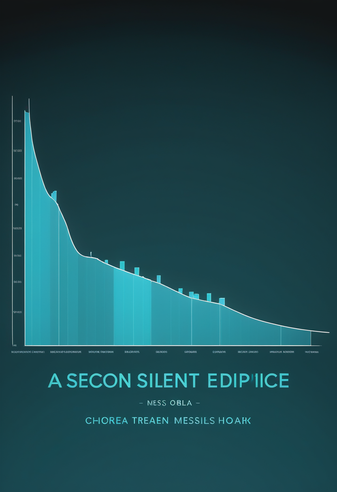
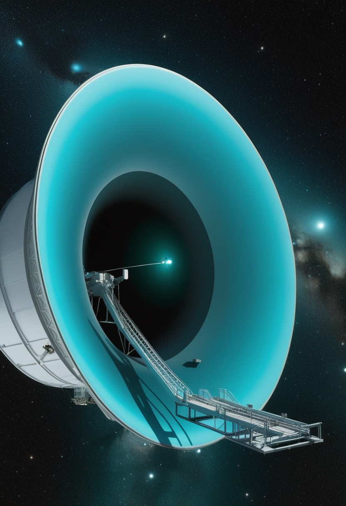
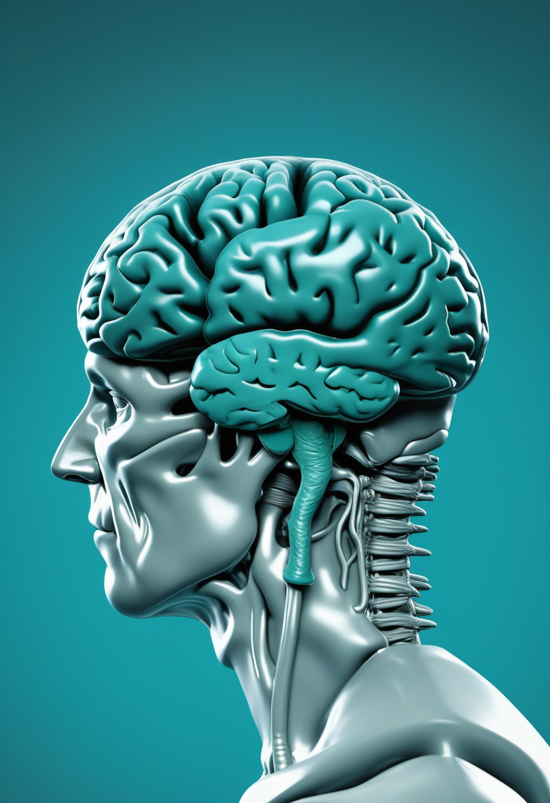
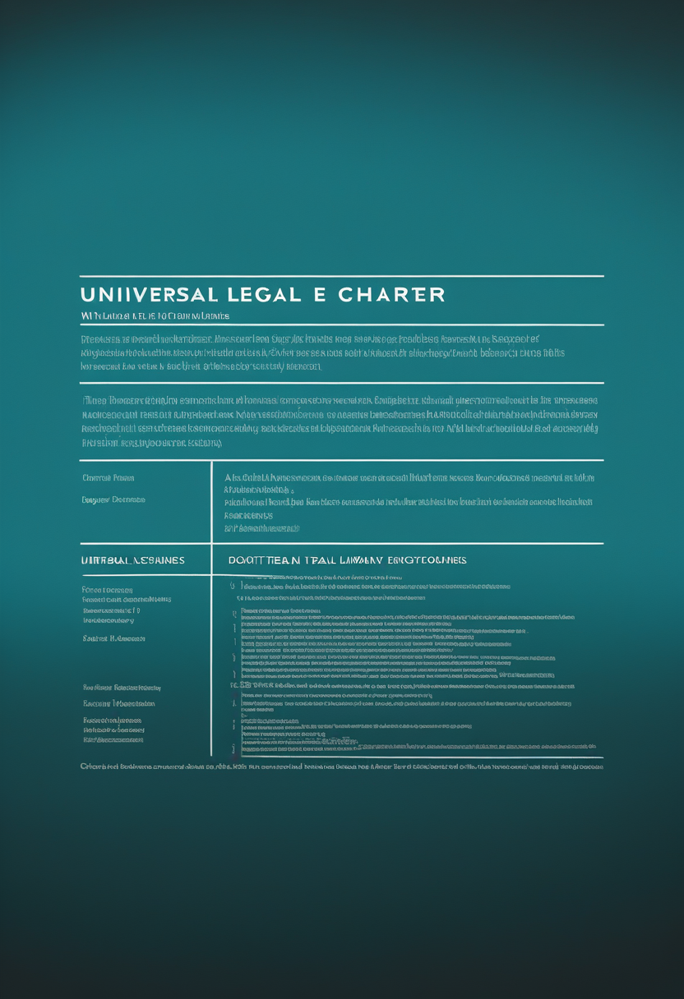

日曜日の便り。FASTとDESIによる約250万銀河の解析は、過去45億年で星形成率が2.46倍分落ち込んだのに中性水素はほぼ横ばいだったと示し、『燃料切れ』説を退ける。命の章では、アピテグロマブの審査が残り24日となったことに加え、Cure SMA 2026での発症前治療の長期良好データと、兵庫県の新生児スクリーニング実績(1.6万人検査・確定3人)を伝える。自由の章では、Precision Neuroscienceが慢性埋め込みを避け30日限定の一時留置という近道でBCIを臨床に届けている実態と、絵記号を目印にした視線ロボットアーム制御の97.9%という数字を報じる。基盤の章では、DRCのエボラが26州中6州に広がった実態と、現場を支えるMSFの体制規模(1,700人超・480床)、そしてエボラの陰で進むコレラ・麻疹の流行を伝える。畏敬の章では、今日の一本の星形成論に加え、CASのスピン-超伝導量子バスとパーキンソン病への既製品細胞治療を紹介する。美の章では、140万年前の足跡が明かすパラントロプス・ボイセイの集団行動と、人類の系統樹を『すべてホモ属に』統合する提案という、二つの分類・起源をめぐる話題を取り上げる。
中国科学院(CAS)を中心とするチームが、約250万個の銀河を対象にした大規模解析をNature Astronomyに発表した(2026年9月1日)。電波望遠鏡FAST(500m球面電波望遠鏡)による中性水素の観測と、暗黒エネルギー分光装置DESIの光学的な赤方偏移を組み合わせたもので、結論は直感に反する。過去45億年で宇宙の星形成率密度は2.46倍分だけ落ち込んだのに対し、その材料であるはずの中性水素(HI)の密度は生の測定値で1.35±0.10倍分しか減っておらず、系統誤差を保守的に補正すると1.12±0.10倍分、つまりほぼ横ばいだった。星が生まれなくなった原因を『燃料切れ』で説明する描像は、これで支持しにくくなる。残る容疑者は、原子ガスを星の直接の材料である高密度の分子ガスへ変える工程そのものである。宇宙が老いた理由は、食料の不足ではなく調理能力の低下にある、という読み替えが必要になった。
Scholar Rockの筋標的薬アピテグロマブは、FDAのアクション日(PDUFA)である9月30日まで本日で残り24日となった。審査の構図は前号から変わっていない。2025年9月の完全回答書(CRL)の原因となったCatalent Indiana社は申請から削除され、審査は第2の充填・仕上げ施設のみで進行中。CRLは製造施設の査察所見に関するもので有効性・安全性への懸念は指摘されておらず、同社はFDAと合意したデータパッケージを提出済みで商用供給も確保済み。承認されればSMNタンパクを増やす既存薬に上乗せする、SMA初の筋標的療法となる。
Cure SMA 2026では、既承認薬の『その後』を見る二つの報告があった。Megan A. Waldrop医師が示したAVXS-101-LT-002の長期追跡解析は、発症前の乳児に静脈内投与のオナセムノゲン アベパルボベク(ゾルゲンスマ)を用いた例を追ったもので、全例がイベントフリー生存を達成し、恒久的な人工呼吸器も胃瘻造設も必要とした患者はいなかった。嚥下機能も全例で保たれ経口摂取が続いている。もう一つ、Claudia A. Chiriboga医師が報告したJEWELFISH試験の最終結果は、他剤による治療歴のある(未治療ではない)SMA患者へのリスジプラムが安全・忍容性が高く有効であることを示した。新規診断例の治療から、すでに治療を受けた人の切り替え・上乗せへと臨床の問いが移っている。
日本のSMA新生児スクリーニングは、兵庫県で2021年2月に始まった先行研究が土台になっている。約1万6,000人を検査して17人が陽性、うち遺伝子検査で14人が偽陽性、3人がSMAと確定した。取り組みは現在、大阪・兵庫・千葉・愛知・熊本の5府県へ広がっている。発症前に治療を始められるかどうかはスクリーニング体制の整備に直結し、日本ではヌシネルセン(2017年)、オナセムノゲン アベパルボベク(2020年)、リスジプラム(2021年)の3剤が承認され、いずれも発症前の早期治療で効果が最大化することが確認されている。
発症前治療の長期成績が『全例イベントフリー生存』で返ってきたことは、新生児スクリーニングの価値を直接に裏づける。薬があっても、見つける仕組みがなければ発症前には届かない。

BCIの規制上の主戦場は『脳に何年も入れっぱなしにしてよいか』だが、Precision Neuroscienceはそこを迂回した。薄膜電極アレイ『Layer 7 Cortical Interface』は1,024個の電極を厚さの薄い柔軟なフィルム上に並べ、1ミリ未満の切開から脳表面へ滑り込ませて取り出せる設計。FDAは2025年4月、これを最長30日間の一時留置デバイスとして510(k)で承認した(K242618)。慢性埋め込みに必要な数年がかりのPMA(市販前承認)を待たずに臨床現場へ入る道を選んだ形で、これまでに37人で主に脳神経外科手術中の短時間記録として使われている。臨床パイロットでは、発話しようとしている状態を約80%の精度で検出できたと報告された。
視線入力で日常作業を代行させるとき最大の難所は、どの物体に対しどの作業をするのかを目の動きだけから確定させることである。Fischer-Janzen、Wendt、Van Laerhovenらの研究は、作業を表すピクトグラム(絵記号)を基準マーカーとして環境に置き、ロボットの手先に付けたカメラ(eye-in-hand配置)による特徴マッチングと組み合わせる枠組みを提案した。選ばれた物体の情報が作業に必要な計測へそのまま渡されるため、視線は『選ぶ』ことに専念できる。物体と作業の選択解釈は最大97.9%の計測で正しく、枠組みはオープンソースとして公開され、最新の物体検出モデルを差し替えることで新しい作業や物体へ適応できる。

視線計測の用途は入力装置にとどまらない。2026年5月のarXiv論文は、AIの関与をどの程度詳しく開示するかを操作した混合要因計画のもとで、AI支援記事を読む際の注意配分と認知負荷を、NASA-TLXと視線計測の両面から測定した。開示の書き方が読者の負担と読み方をどう変えるかを、主観評価だけでなく眼の動きで裏づけようとする設計である。臨床側でもFrontiers in Human Neuroscienceに臨床医向けのBCI総説が掲載され、研究室の技術を診療の語彙へ翻訳する作業が進んでいる。視線は操作の手段であると同時に、内部状態の観測窓でもある。
Precisionの選択は技術ではなく制度の話である。『30日まで』という枠を受け入れると、データも収益も先に手に入る。慢性埋め込みの正面突破より、こちらが標準経路になる可能性がある。

DRCのブンディブギョ型エボラ(BDBV)は、9月3日の報告(9月2日までのデータ)で確定6,342例・死亡3,072人のまま、本号作成時点で新しい公表値が確認できなかった。前号と同じ数値であり、流行が止まったのではなく報告の更新が追いついていないと読むのが妥当。致死率は約48.4%、回復1,475人、隔離入院770人。累計ではイトゥリ州が5,164例・2,342人(致死率約45.4%、全確定例の約81.4%)、北キブ州が913例・614人(同約67.3%)で、2州で全体の約96%を占める。新たに分かったのは地理的な広がりで、影響を受けた州は国内26州のうちバ・ウエレ、オー・ウエレ、イトゥリ、北キブ、南キブ、チョポの6州に達している。
数字の裏側にある対応の規模が具体的に見えてきた。MSFはイトゥリ、北キブ、南キブ、オー・ウエレ、チョポの5州に1,700人を超える職員を投入し、7つのエボラ治療センター(ETC)と15を超える隔離ユニットを運営している。総病床数は480床超で、流行開始以来1,362人以上を受け入れた。ただしMSF自身は、接触者追跡、地域社会との対話、疑い例を封じ込めるのに十分な速さでの診断・隔離という3点に、いまだ危険な隙間が残ると警告する。MSFが用いる数値は9月1日時点の6,250例・3,039人・生存者1,400人超であり、本紙が上で用いた9月2日時点の値とは1日分ずれている(出典ごとに基準日が異なるため単純比較は不可)。

エボラに注目が集まる一方、より広い範囲で人が死んでいる病気がある。WHO/ECDCの集計では、2026年1月1日から8月26日までに世界で21万2,857例のコレラと1,943人の死亡が報告された(致死率約0.9%)。直近1か月(7月27日〜8月26日)だけで新規4万2,717例・死亡257人が加わり、その大半の4万1,296例がナイジェリア1国に集中している。以下アンゴラ524例、ソマリア489例、モザンビーク319例、チャド47例と続く。米国では麻疹が9月3日時点で年間3,134例の確定例に達し、2026年の集団発生は38件、確定例の95%が集団発生に関連づけられている。いずれも既存の手段(経口補水、ワクチン)で大部分を防げる死である。
更新が止まった日の数字ほど扱いが難しい。『増えていない』ではなく『まだ見えていない』と読むべきで、報告の遅れそのものが対応能力の指標でもある。

今日の一本で扱った成果を数値で押さえる。中国科学院を中心とするチームは、FAST(500m球面電波望遠鏡)による中性水素21cm線の観測と、DESI(暗黒エネルギー分光装置)の光学赤方偏移カタログを突き合わせ、約250万個の銀河を解析した。過去45億年で宇宙の星形成率密度は2.46倍分減衰した一方、中性水素の宇宙論的質量密度の減少は生の測定で1.35±0.10倍分、系統的な補正を保守的に施すと1.12±0.10倍分にとどまった。星形成の落ち込みと水素の減り方が桁で釣り合わないため、『ガスが尽きたから星ができない』という単純な因果は成り立たない。焦点は、原子状水素を分子雲へ凝縮させる過程 ― 冷却効率、乱流、フィードバック、金属量 ― の側へ移る。成果はNature Astronomyに2026年9月1日付で掲載された。
中国科学院のグループが2026年4月、性質の異なる量子モジュールを接続するハイブリッド構成を実証したと報じられた。設計されたバーチャル光子(仮想光子)を介してスピン系のモジュールと超伝導系のモジュールを結ぶ量子バスを構成し、40ナノ秒で忠実度99.05%の普遍ゲート操作を実現したという。誤り耐性量子計算に必要とされる閾値を超える水準であり、単一方式で規模を拡大する路線とは別に、それぞれ得意分野の異なる量子系を組み合わせる『モジュール接続』の路線に現実味を与える。中国の光量子路線では既報の『九章4.0』(3,050光子)が並走している。なお本項は二次的な報道に基づいており、査読済み原典との数値の一致は本紙では確認できていない(要確認)。

Nature Medicineが2026年に掲載した第1/2相試験では、パーキンソン病に対して患者ごとに作るのではない『既製品(off-the-shelf)』型の幹細胞由来ドパミン作動性前駆細胞を移植した結果、12か月時点で良好な安全性プロファイルが示された。移植片に関連する有害事象、ジスキネジア(不随意運動)、腫瘍形成のいずれも認められていない。細胞治療の安全性の壁として繰り返し警戒されてきた3点が、この期間については立ち上がらなかったことになる。同誌には内耳の免疫特権的な環境を利用した先天性難聴への両耳遺伝子治療や、母体接種のB群溶血性連鎖球菌ワクチン(GBS6)第1/2相の報告も並び、細胞・遺伝子治療の適応が着実に広がっている。個々の試験の詳細な数値は原典での確認を推奨する(要確認)。
FASTとDESIの組み合わせは、電波で『材料』を測り、可視光で『距離』を測るという分業である。片方だけでは出せない結論を、異なる波長の望遠鏡を突き合わせて引き出した点に、この成果の方法論的な価値がある。
ケニアのクービ・フォラ層、トゥルカナ湖畔で見つかった140万年前の足跡群が、パラントロプス・ボイセイが集団で移動していたことを示した。8人分(ほとんどが成人男性とみられる)の足跡が並び、女性や子どもは含まれていないことから、これまで考えられていたより複雑な社会構造を示唆する。足の解剖学的特徴と歩き方の癖から種を同定する2024年開発の分析手法を用いた結果、身長約1.8メートル・体重約75キロという、骨格化石からの推定を上回る人間並みの体格の個体も含まれていた。研究はProceedings of the National Academy of Sciences(PNAS)に掲載された。
モナシュ大学のIan Towle氏らが、アウストラロピテクスとパラントロプスをホモ属に統合すべきだとする提案をAmerican Journal of Biological Anthropology誌に発表した。新しい化石の発見や遺伝的解析の進展、系統推定手法の精緻化により、従来の属分類がヒト科の実際の系統関係を反映していないことが分かってきたためで、過去400〜500万年のヒト族の化石種をまとめて一つの大きなホモ属に収めることを提案する。近縁種間の交雑が繰り返されてきたことも整合的に説明できる一方、パラントロプスや後期の大脳化したホモ属が持つ生態的・形態的な独自性という直感的な区別は失われる。分類そのものが議論の的になっている。

神経権(ニューロライツ)を各国の法体系へどう落とし込むかという問いが前面に出てきた。2026年の特集号『Neurorights in the Age of AI: Universalism, Cognitive Vulnerability, and the Limits of Legal Translation』は、普遍的な原則として掲げられた神経権が、認知的な脆弱性の扱いや既存の法概念との摩擦のなかで、翻訳の限界に突き当たる場面を論じている。並行してAI側の意識をめぐる議論も『決着させてから考える』ことをやめつつある。arXivに公開された枠組みは、AIに意識があるか不明なままでも人間中心の観点から倫理的判断を進める方法を提案しており、不確実性を前提に意思決定するという実務的な立て方をとる。人間の脳を守る法と機械の内面を問う倫理が、同じ空白を別方向から埋めにきている。
140万年前の足跡は『歩いた』という行動の証拠であり、系統樹の書き換え提案は『名付け方』の問題である。行動の証拠が先に積み上がり、分類の理屈が後から追いつこうとしている。
日曜日の便り。FASTとDESIによる約250万銀河の解析は、過去45億年で星形成率が2.46倍分落ち込んだのに中性水素はほぼ横ばいだったと示し、『燃料切れ』説を退けた。命の章では、アピテグロマブの審査が残り24日となったことに加え、Cure SMA 2026での発症前治療の長期良好データと、兵庫県の新生児スクリーニング実績(1.6万人検査・確定3人)を伝えた。自由の章では、Precision Neuroscienceが慢性埋め込みを避け30日限定の一時留置という近道でBCIを臨床に届けている実態と、絵記号を目印にした視線ロボットアーム制御の97.9%という数字を報じた。基盤の章では、DRCのエボラが26州中6州に広がった実態と、現場を支えるMSFの体制規模(1,700人超・480床)、そしてエボラの陰で進むコレラ・麻疹の流行を伝えた。畏敬の章では、今日の一本の星形成論に加え、CASのスピン-超伝導量子バスとパーキンソン病への既製品細胞治療を紹介した。美の章では、140万年前の足跡が明かすパラントロプス・ボイセイの集団行動と、人類の系統樹を『すべてホモ属に』統合する提案という、二つの分類・起源をめぐる話題を取り上げた。
では、また明日の朝に。 — JaH